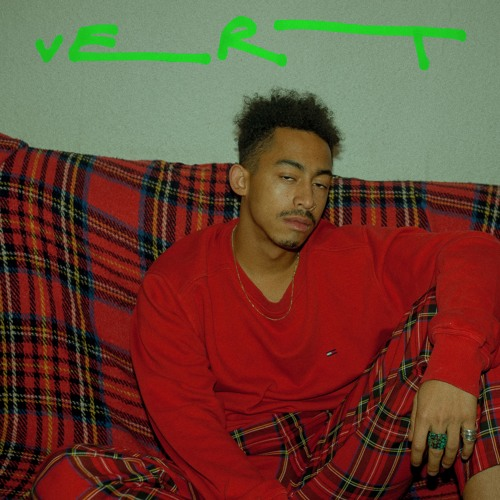

WILDHOOD
Captained by Jordan Stephens, one half of British hip-hop-pop duo Rizzle Kicks,Wildhood is somewhat shrouded in mystery — which only adds to the appeal. According to Gigwise, Wildhood is Stephens’ “dark side” of an experimental outlet, with Stephens’ father Herman Stephens on bass and producer Tommy D on drums and various other sonic “flourishes.” But Wildhood is much more than a side project — their releases are far from cookie-cutter, varying from dark pop to relaxed R&B, all tinged with heavily-personal details. Vert, Wildhood’s eight-track EP released in March, basically lives up to Stephens’ statement that Wildhood makes pretty much “whatever [they] want” (as told to The Telegraph).
FOLLOW HIM